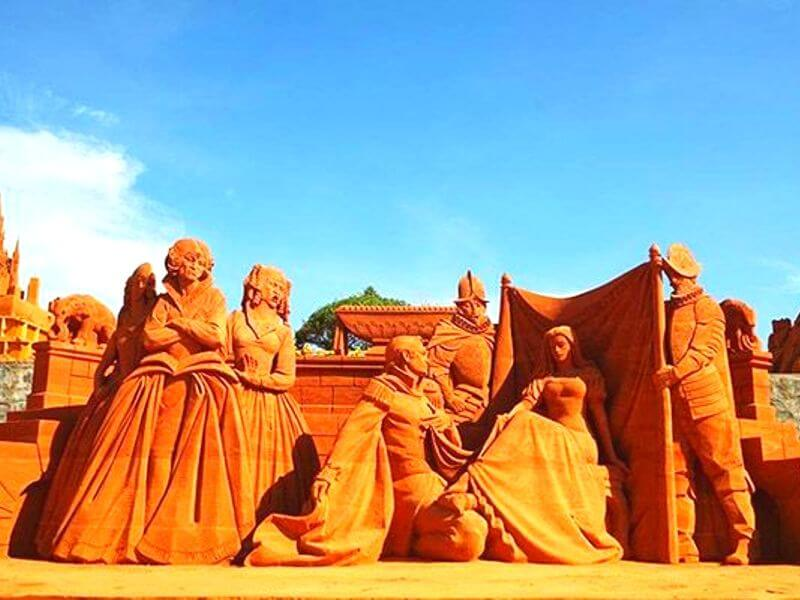
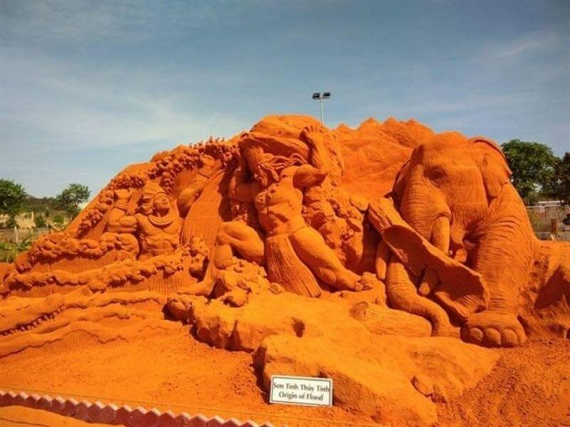
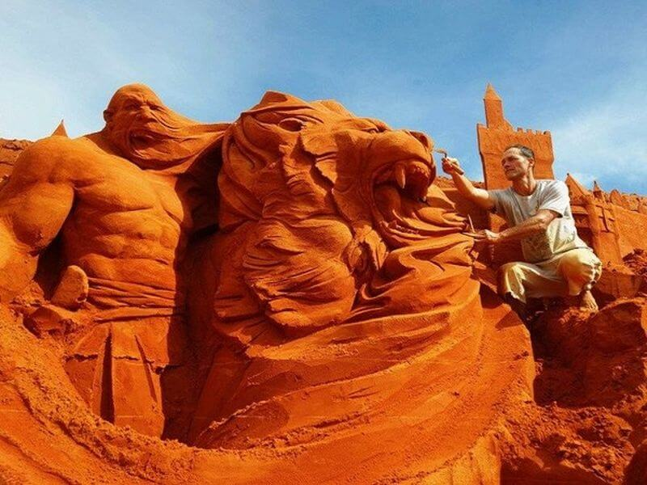
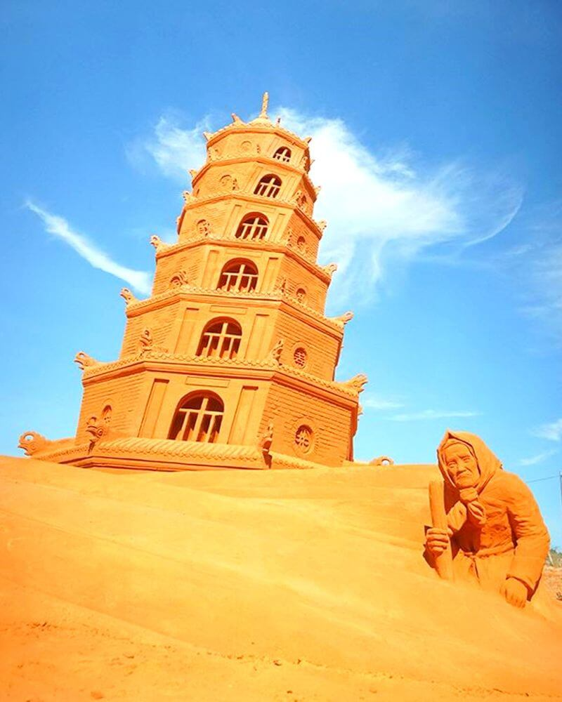

Bình Thuận
HẸN NHAU TẠI CÔNG VIÊN TƯỢNG CÁT FORGOTTEN LAND Ở PHAN THIẾT
Ngoài các điểm du lịch Phan Thiết quen thuộc như biển Mũi Né, Tháp Chàm, Bãi Rạng, Hải đăng Kê Gà, Đồi Cát Hồng hay Bàu Trắng, du khách tới Phan Thiết còn có thể chiêm ngưỡng những tác phẩm nghệ thuật “độc nhất vô nhị” trong Công viên Tượng Cát Forgotten Land (Vùng đất Bị Quên Lãng) .
Vào công viên thật sự như đang đặt chân lên những đồi cát, độ mềm và mịn của chất liệu cát nơi này cùng với bàn tay tài hoa của các nghệ nhân, đã tạo nên những bức tượng cát nghệ thuật khổng lồ vô cùng sinh động và đầy cuốn hút. Những tượng điêu khắc cát vô cùng độc đáo, đa dạng như đưa ta trở về kỷ niệm một thời tuổi thơ.

Những tượng điêu khắc cát vô cùng độc đáo, đa dạng như đưa ta trở về kỷ niệm một thời tuổi thơ
Công viên tượng cát Forgotten Land nằm trên đường Nguyễn Thông, Phú Hài, cách trường Đại học Phan Thiết 200m. Forgotten Land là công viên tượng cát có quy mô hoành tráng lần đầu tiên mở cửa tại Việt Nam, ngay trung tâm Phan Thiết nên rất dễ tìm.
Công viên tượng cát Phan Thiết Forgotten Land
Thời gian: Giờ mở cửa 7g30 đến 18g.
Điện thoại: 097 377 54 46
Giá vé: Vé người lớn 100.000 đồng, vé trẻ em 70.000 đồng

Forgotten Land là công viên tượng cát có quy mô hoành tráng lần đầu tiên mở cửa tại Việt Nam
Forgotten Land hội tụ đủ các tác phẩm nghệ thuật đặc sắc cuốn hút một lượng lớn khách tham quan, đặc biệt là giới trẻ. Khai trương từ ngày 29/01/2017, với diện tích khoảng 1,3ha, công viên tượng cát Forgotten Land xứng đáng nổi tiếng về giá trị nghệ thuật đặc sắc từ vật liệu hoàn toàn 100% cát tự nhiên biển Phan Thiết và chỉ với trộn nước, ngoài ra không hề có trộn phụ gia.

Công viên tượng cát Forgotten Land được xây dựng từ vật liệu hoàn toàn 100% cát tự nhiên biển Phan Thiết và không hề có trộn phụ gia
Hội tụ hơn 30 tác phẩm kỳ vĩ từ 300 tấn cát, thành quả đầy sáng tạo của những điêu khắc gia bậc thầy thuộc 16 quốc gia khắp thế giới: Nga, Hà Lan, Nhật Bản, Hàn Quốc, Mỹ, Ý, Brazil, Canada,…, những nhà điêu khắc bậc thầy đã điêu khắc nên những tác phẩm mang hơi thở của văn hóa dân tộc mình qua những biểu tượng nghệ thuật đã thành bất tử: Quạ và Cáo, Chú mèo hia, Sơn tinh – Thủy tinh, Người đẹp và Quái thú, Công chúa ngủ trong rừng,…
Từng bức tượng cát ở công viên Forgotten Land sẽ kể cho du khách nghe những câu chuyện cổ tích huyền bí, cuốn hút tâm hồn bao thế hệ từ Đông sang Tây, dẫn dắt người chiêm ngưỡng hồi tưởng lại tuổi thơ với một thế giới xuyên ranh giới văn hóa, nơi đó có biển khơi cùng cánh buốm trắng gọi mời các thủy thủ dũng cảm, có rừng già âm u với mụ phù thủy trong căn nhà gỗ, có những bức tường tháp lâu đài trong sương mù,....


Từng bức tượng cát sẽ kể cho du khách nghe những câu chuyện cổ tích huyền bí, cuốn hút tâm hồn bao thế hệ từ Đông sang Tây
Các khối tượng đều có kích thước khổng lồ. Du khách dễ dàng bị choáng ngợp trước sự hoành tráng và sống động của những khối tượng cát tuyệt mỹ này. Chị Thanh Thư (du khách từ TP .HCM) đã chia sẻ "Khi vừa nhìn thấy, tôi đã phải thốt lên kinh ngạc vì các bức tượng trông rất giống với đời thật như truyện cổ tích hiện ra trước mắt. Mình như được đi du lịch đến nhiều nơi để khám phá các công trình kiến trúc”.
Du khách dễ dàng bị choáng ngợp trước sự hoành tráng và sống động của những khối tượng cát tuyệt mỹ này
Trong không gian nghệ thuật được đầu tư kỹ lưỡng này còn có không gian riêng cho các em nhỏ được trải nghiệm loại hình nghệ thuật điêu khắc. Công viên tượng cát Forgotten Land là một trong những địa điểm du lịch không thể bỏ qua khi đặt chân đến Phan Thiết. Đến đây để yêu cái nắng, gió, biển cát của Phan Thiết và cùng sống lại khoảnh khắc tuổi thơ hồn nhiên với những lâu đài cát, những núi đồi, biển cả, rừng già, … phút chốc hiện ra trước mắt, đầy cảm xúc hoài niệm.